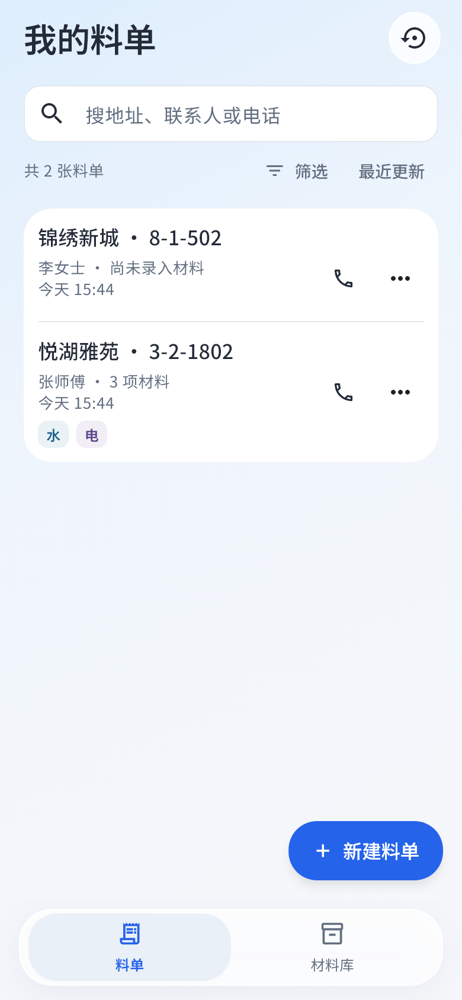
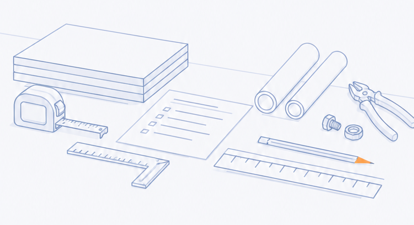

给水电与地热施工的一本料记
记清每一笔用料
料记体验台网页示例
现场 · 记用量
今天，要用多少？
随用量，一起变化A5 料单预览
料记LIAOJI / MATERIAL NOTE
施工材料清单
共 4 项材料网页示例 · 非实际订单
用量列清楚，交代起来也清楚。App 内支持 PDF 预览、分享与打开。
试着按一下 ＋，或输入 2.5体验数据仅在当前页面中，刷新即可还原。
水料 / 电料 / 地热只记用量，也可以业务数据，留在本机
从这里试一笔，到工地上用得顺手
把熟悉的活儿，
理得更顺一点。
给材料留一个位置，给每个工地留一张料单。
真正打开 App，常用的操作都在手边。
过去记过的，都找得到。
按施工地点整理料单，地址、联系人和电话都能搜索。再接到电话时，不必从头翻找。
保留你做事的习惯，
省下反复整理的时间。
省下反复整理的时间。

记在手机里，心里更有底。
业务数据保存在本机。App 支持导出与恢复备份，换机前记得为资料留一份副本。

开始之前
你可能还想知道
支持哪些设备？
目前提供 Android 版，点击下载按钮即可前往蒲公英安装页面。网页体验台只用于了解录量方式，完整功能请在 App 中使用。
可以先试用吗？
可以。首次主动联网领取后，可连续试用 30 天；安装或打开 App 不会自动开始计时。首次领取和激活需要联网，具体授权状态及提示以 App 内显示为准。
记料一定要填价格吗？
不需要。现场可以只记材料和用量，单价按需填写。PDF 默认以材料与用量为主，让接收的人容易核对。
数据存在哪里？不联网能用吗？
料单、客户和材料等业务数据存放在手机本机，不上传授权服务。首次领取或激活需要联网，之后仍需按 App 提示进行授权校验；有效离线许可期间可以正常使用。建议定期导出备份，并把副本放在安全的位置。
怎么把料单交给别人？
在 App 内预览 PDF 后，可通过系统分享或外部打开交付料单。网页中的联动预览是交互示例，实际 PDF 以 App 生成的文件为准。